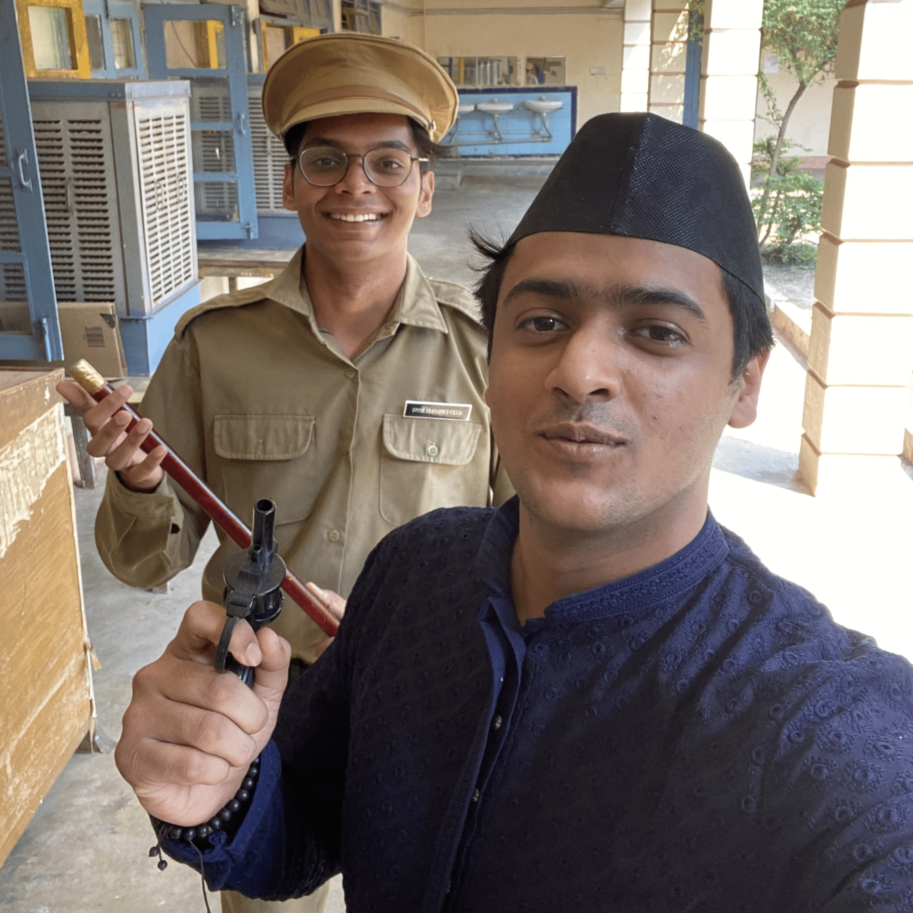
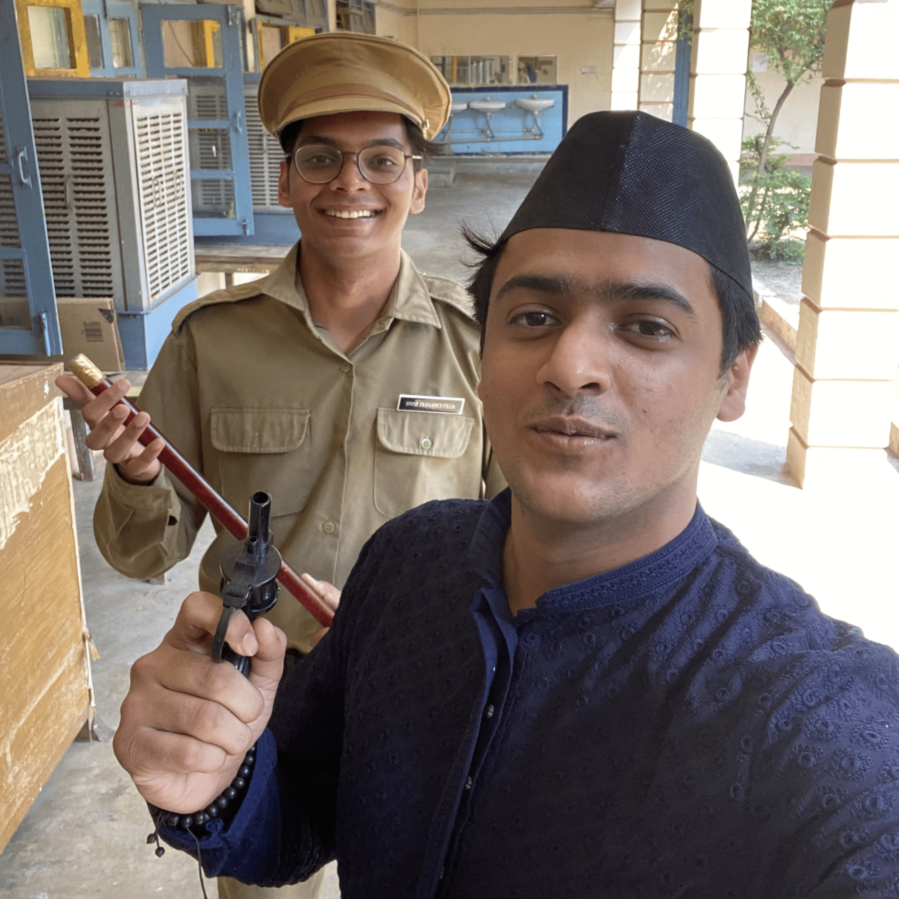

Introduction
Hello, everyone! My name is Vedant Zope, and I am an undergraduate student at IIT Kharagpur, majoring in Metallurgical and Materials Engineering. I am pursuing a Bachelor of Technology degree and expect to graduate in 2024.
My academic interests lie deeply in computational sciences, and I often find myself engrossed in complex algorithms and data structures. I am excited to share my work in this domain through my upcoming blogs.
When not immersed in my studies, I love to unwind with sci-fi, fantasy, and rom-com movies. It might sound cliché, but there’s something about these genres that I absolutely love!
I’m also a sports enthusiast with a fondness for swimming and athletics. The thrill of competition, the discipline, and the sheer joy of movement are aspects of sports that I deeply enjoy.
Over the past three years, I’ve been actively involved in various organizations at my college, such as TeamKART, and have participated in InterIIT. I take pride in being a part of my hall, the Rajendra Prasad Hall of Residence, where I was served as the secretary of the social and cultural committee, also involved in the general championship, including hardware modeling, short filmmaking, and stage play.
This blog is my attempt to share my story - the challenges, the triumphs, the learnings, and the fun times. I hope to inspire, educate, entertain, and perhaps even provoke thought through my posts. I invite you to join me on this journey. Let’s explore the world of computational sciences, dive into the stories of my college life, and talk about random things. Feel free to share your thoughts, experiences, and suggestions. Let’s learn, grow, and have fun together!
You can reach out to me at vedantzope@gmail.com or LinkedIn. If you have something intriguing to discuss or if I can assist you in any way. I am looking forward to connecting with you all!

 

Cheers!
Vedant Zope